Les Héritiers (Terre-001)
.jpg)
Les Héritiers étaient à l'origine des humains ordinaires qui ont été transformés par le patriarche Solus en totems de la Sangsue, le plus bas de tous les Totems du Multivers.
Le terme "Totem" représente des êtres reliant les animaux à l'humanité : Spider-Man étant par exemple le Totem de l'Araignée, ou encore Black Panther étant le Totem de la Panthère.
Capables uniquement de parasiter les pouvoirs d'autrui, les Héritiers se nourrissent de la force vitale des avatars totémiques, ainsi que des Dieux totémiques eux-même.
Ils finirent par se spécialiser dans la chasse aux Totems-Araignées pour accéder à la Toile de la Vie et du Destin dans leur quête pour vaincre la divinité araignée de la Terre-001, le Maître Tisseur.
La mère du clan ainsi que sa progéniture Bora, Verna, Brix, Daemos, Jennix, Karn et Morlun l'attaquèrent chez lui, mais lorsque Karn eut l'occasion de frapper, le Maître Tisseur révéla que Karn ne trouvait aucun plaisir dans la mort, et souhaitait pouvoir créer plutôt que de détruire.
Karn hésita, et sa mère attaqua le Tisseur, qui fut tué.
Alors que Karn était sous le choc, son père, Solus, arriva et soumit le Maître Tisseur avec ses frères et sœurs. Karn fut contraint de porter un masque pour dissimuler sa honte et sa lâcheté, et devint un paria au sein de sa famille.
Comprenant que le pouvoir du Tisseur pouvait être exploité, les Héritiers utilisèrent des chaînes conçues par Jennix pour contrôler ce pouvoir afin de voyager entre les dimensions, et ainsi traquer tous les Totems-Araignées du Multivers.
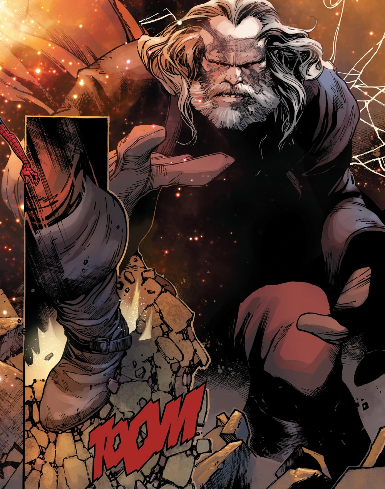
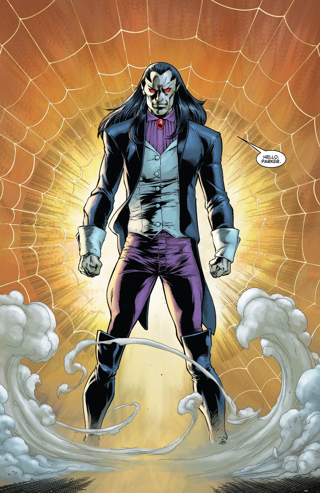
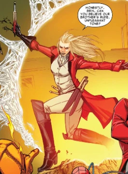
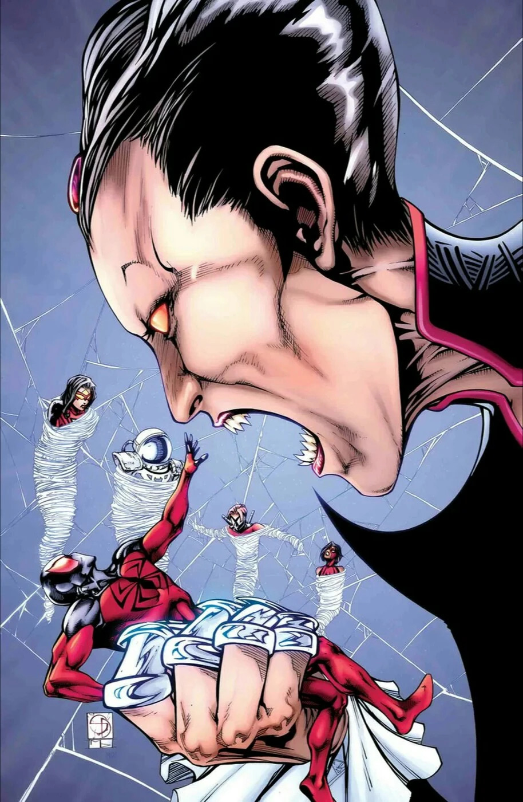
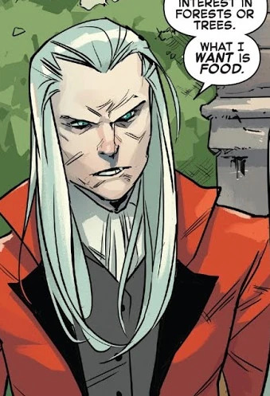
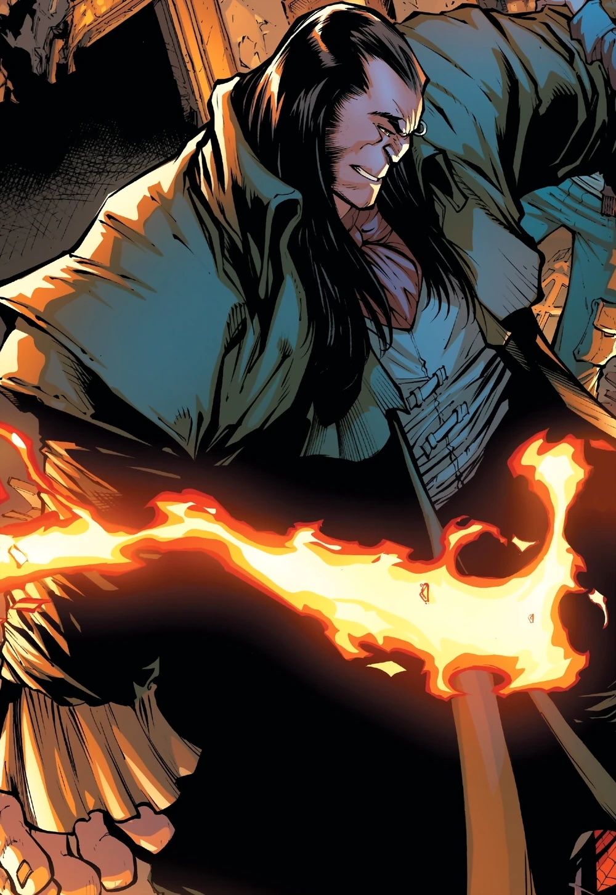
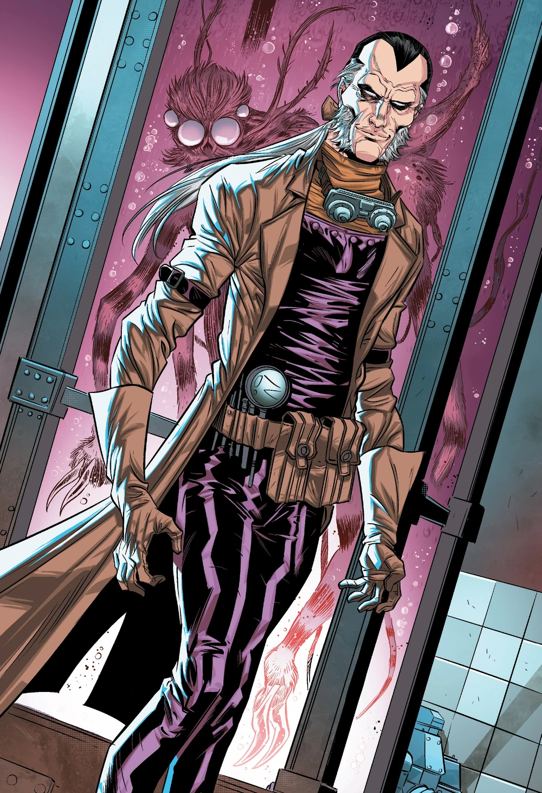
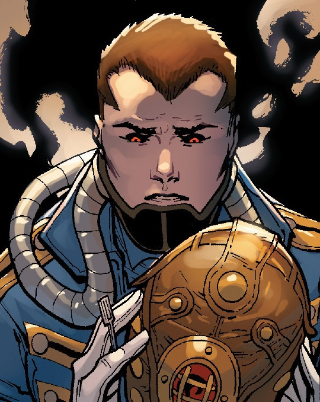
Alliance avec le Goblin 2099
Les Héritiers furent amenés sur Terre-TRN389 par le Bouffon Vert.
Ils conclurent un marché : s'ils lui livraient le Spider-Man natif, elle leur donnerait accès à la Terre-41940, le monde des Spider-Men (un groupe d'alter ego de Spider-Man réunis pour combattre les Sinister Six Multiversels).
Lorsque le Spider-Man de ce monde arriva à Nueva York, il constata qu'on ne le reconnaissait pas.
Parker comprit que les Spider-Men venaient du futur par rapport aux Héritiers, les ayant aidé à les vaincre durant la Guerre des Totems.
Grâce à cette information, ils purent secourir O'Hara et utiliser les émetteurs temporels du Bouffon Vert pour renvoyer les Héritiers sur Terre-001.
La Guerre des Totems
Lorsque les Héritiers réussirent à rassemble les trois totems d'araignée nécessaires à l'exécution d'un rituel, l'Autre, l'Enfant et l'Épouse, la Spider-Army formée pour s'opposer aux Héritiers se rendit à leur base, Loomworld, pour les arrêter.


Finalement, la Spider-Army parvint à vaincre les Héritiers et à interrompre le rituel qui aurait dû les anéantir.
Les Héritiers furent abandonnés sur Terre-3145, un univers où la Terre était devenue radioactive suite à une guerre nucléaire.
Extrêmement vulnérables aux radiations, ils y mourraient.
Il était impossible pour eux de s'échapper, car le Maître Tisseur, qu'ils avaient asservi et qui leur permettait de voyager à travers le Multivers, avait été tué par le Superior Spider-Man.
Cependant, Spider-Man leur révéla l'existence d'un bunker dans la Tour Sims, où ils pourraient survivre sans plus représenter de menace.
Spider-Geddon
Les Web-Warriors finirent par envoyer des Spider-Bots pour les surveiller, mais ceux-ci furent détruits.
Pendant ce temps, le Superior Spider-Man combina les technologies de Jennix et du Chacal pour créer des corps clonés lui permettant de transférer son esprit si son corps actuel venait à mourir.
Jennix utilisa alors la technologie des Spider-Bots pour pirater les tubes de clonage et créer de nouveaux corps, permettant à sa Famille de se réincarner, leur permettant un retour triomphal.
Après avoir cloné le corps de leur père et récupéré le cristal contenant son âme, ils parvinrent à le ramener à la vie.
Finalement, Miles Morales, doté du pouvoir de la Force Enigma, tua Solus avec l'Épée Vigor.
Les autres Spider utilisèrent les tubes de clonage du Chacal pour créer de nouveaux corps de bébés pour les autres Héritiers, ne leur laissant aucun souvenir de leur passé, lorsqu'ils découvrirent que Solus avait insufflé la faim à ses enfants et que ce pouvoir ne pouvait être guéri.
Les nouveaux-nés furent ensuite adoptés par Spider-Ma'am.
Après que la déesse-guêpe totémique Shathra ait été libérée une fois de plus, elle finit par corrompre Spider-Ma'am et tua tous les bébés Héritiers, ne laissant que Morlun comme seul survivant.
.jpg)
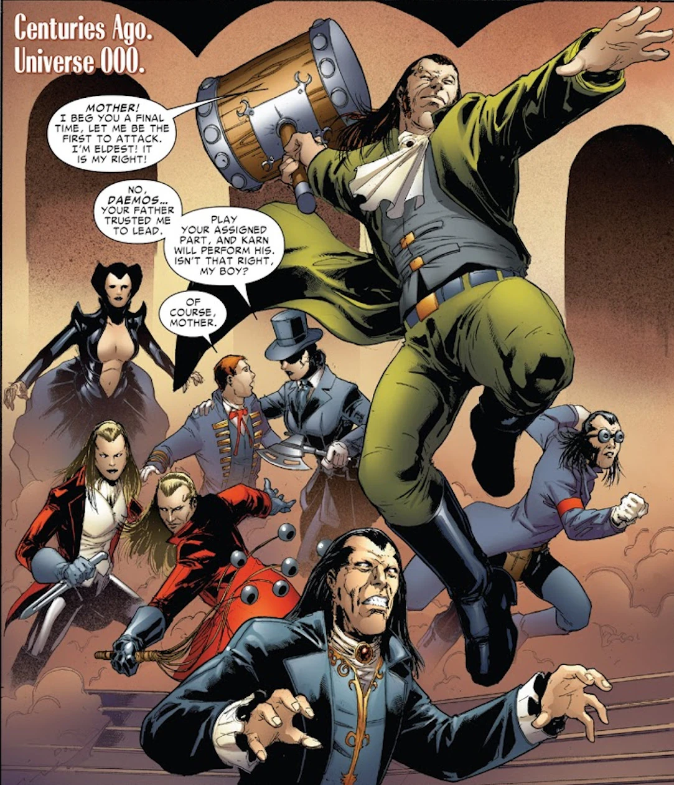
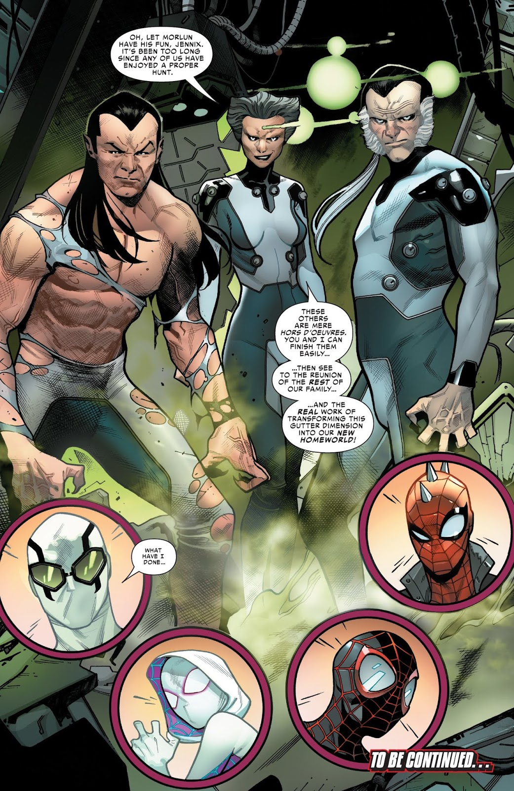
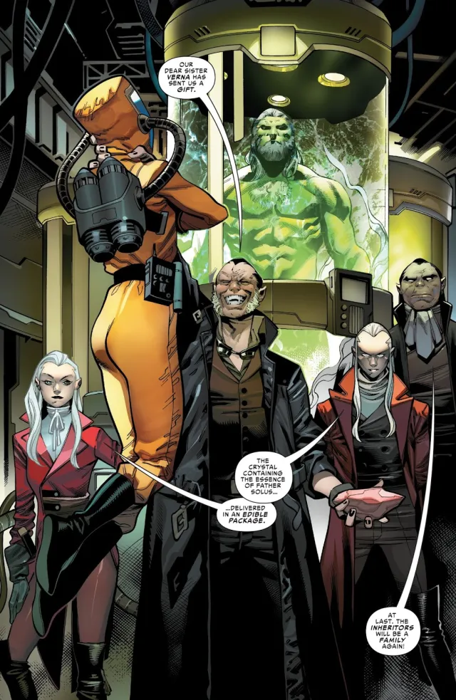